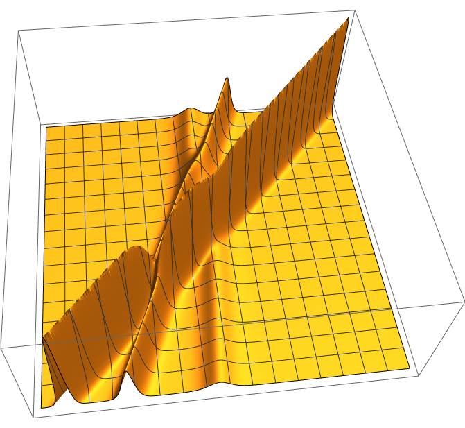
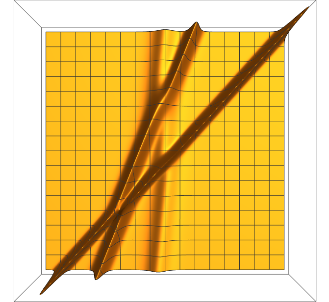

・\(u(x,\,t)\) は \(x\) 軸の正方向に進む波の 時刻 \(t\), 位置 \(x\) における波の振幅
・振幅に比例する速度で伝わる孤立波の解 (1-ソリトン解)
\[u(x,\,t)=\frac{v}{2}\mathrm{sech}^2\left[\frac{\sqrt{v}}{2}(x-vt-\theta)\right]\;\;\;\left(\theta=-\frac{2c}{\sqrt{v}},\,c:任意定数\right)\] \[\theta:\,\mbox{ソリトンの(初期)位相},\;t=0\,における振幅のピーク位置\]導出
速度 \(v\) で形を変えずに \(x\) 軸正方向に進む波: \[u(x,\,t)=f(x-vt)=f(\xi)\;\;\bigl(\xi:=x-vt\bigr)\]
これをKdV方程式に代入すると、\(u_x=f'\xi_x=f',\,u_t=f'\xi_t=-vf'\) より、
\begin{align*}
0&=-vf'(\xi)+6f(\xi)f'(\xi)+f'''(\xi)\\
&=\Bigl(-vf(\xi)+3f(\xi)^2+f''(\xi)\Bigr)'
\end{align*}
\[\Rightarrow\;-vf(\xi)+3f(\xi)^2+f''(\xi)=\mathrm{const}\;\;\cdots(1)\]
孤立波の特性上 \(t\) を任意の有限の値に固定すると \(u,\,u_x,\,u_{xx}\rightarrow{0}\;(x\rightarrow\pm\infty)\) を満たすため、
\[f,\,f',\,f''\rightarrow0\;\;(\xi\rightarrow\pm\infty)\;\;\cdots(\ast)\]
となり、\((1)\) の右辺は 0 となる。また、
\begin{align*}
0=(1)*f'(\xi)&=-vf(\xi)f'(\xi)+3f(\xi)^2f'(\xi)+f'(\xi)f''(\xi)\\
&=\Bigl(-\frac{v}{2}f(\xi)^2+f(\xi)^3+\frac{1}{2}f'(\xi)^2\Bigr)'
\end{align*}
\[\Rightarrow\;-\frac{v}{2}f(\xi)^2+f(\xi)^3+\frac{1}{2}f'(\xi)^2=\mathrm{const}=0\;\because(\ast)\]
ここで、\(v\) 依存性をなくすため、各項が \(v^3\) になるよう、
\[f(\xi)=\frac{v}{2}y(\eta),\;\eta:=\frac{\sqrt{v}}{2}\xi\]
と変数変換をすると、
\begin{align*}
0&=-\frac{v}{2}\cdot\frac{v^2}{4}y(\eta)^2+\frac{v^3}{8}y(\eta)^3+\frac{1}{2}\cdot\frac{v^3}{16}y'(\eta)^2\\
&=-y(\eta)^2+y(\eta)^3+\frac{1}{4}y'(\eta)^2
\end{align*}
そして \(\displaystyle\frac{1}{y(\eta)}=z(\eta)^2\) とおくと、
\begin{align*}
z'(\eta)&=\left(\pm\sqrt{\frac{1}{y(\eta)}}\right)'\\
&=\pm\left(-\frac{1}{2}y(\eta)^{-\frac{3}{2}}\cdot{y'(\eta)}\right)
\end{align*}
ここで、
\begin{gather*}
-y(\eta)^2+y(\eta)^3+\frac{1}{4}y'(\eta)^2=0\\
\Leftrightarrow\;y(\eta)^2\bigl(1-y(\eta)\bigr)=\frac{1}{4}y'(\eta)^2\\
\Leftrightarrow\;\frac{1-y(\eta)}{y(\eta)}=\frac{1}{4}y(\eta)^{-3}y'(\eta)^2\\
\end{gather*}
となることから、
\[z'(\eta)=\pm\sqrt{\frac{1-y(\eta)}{y(\eta)}}=\pm\sqrt{\frac{1}{y(\eta)}-1}=\pm\sqrt{z(\eta)^2-1}\]
これを解くと、
\begin{align*}
&\frac{dz(\eta)}{d\eta}=\pm\sqrt{z(\eta)^2-1}\\
&\pm\int\frac{1}{\sqrt{z^2-1}}dz=\int d\eta\\
&\pm\int\frac{\sinh{t}}{\sqrt{\cosh^2{t}-1}}dt=\eta+C_1\\
&\pm\int dt=\eta+C_1\\
&\pm(\cosh^{-1}{z}+C_2)=\eta+C_1
\end{align*}
\[\therefore z=\pm\cosh(\eta+c)\]
よって、
\begin{align*}
u(x,\,t)&=f(\xi)\\
&=\frac{v}{2}y(\eta)\\
&=\frac{v}{2}\cdot\frac{1}{\cosh^2(\eta+c)}\\
&=\frac{v}{2}\mathrm{sech}^2(\eta+c)\\
&=\frac{v}{2}\mathrm{sech}^2\left[\frac{\sqrt{v}}{2}\xi+c\right]\\
&=\frac{v}{2}\mathrm{sech}^2\left[\frac{\sqrt{v}}{2}(x-vt)+c\right]\\
&=\frac{v}{2}\mathrm{sech}^2\left[\frac{\sqrt{v}}{2}(x-vt-\theta)\right]\;\;\left(\theta=-\frac{2c}{\sqrt{v}},\,c:任意定数\right)
\end{align*}
・2-ソリトン解
\[u(x,\,t)=2\frac{\partial^2\log(\tau(x,\,t))}{\partial{x}^2}\] \[\tau(x,\,t)=1+e^{\eta_1}+e^{\eta_2}+e^{\eta_1+\eta_2+A_{12}}\] \[\begin{cases} 0<p_1,\,p_2\\ p_1\neq{p_2}\\ \theta_1,\,\theta_2:任意の実定数\\ \eta_i:=p_ix-p_i^3t-\theta_i\\ \displaystyle e^{A_{12}}=\frac{(p_1-p_2)^2}{(p_1+p_2)^2}\\ \end{cases}\]導出
\[u(x,\,t)=2\frac{\partial^2\log(\tau(x,\,t))}{\partial{x}^2}\;\;\cdots(1)\]
をKdV方程式に代入すると、
\begin{align*}
u_t&=2\bigl(\log(\tau)\bigr)_{xxt}\\
&=2\left(\frac{\tau_x}{\tau}\right)_{xt}\\
&=2\left(\frac{\tau\tau_{xt}-\tau_x\tau_t}{\tau^2}\right)_x\\
6uu_x&=(3u^2)_x\\
&=3\left\{\left(2\frac{\tau\tau_{xx}-\tau_x^2}{\tau^2}\right)^2\right\}_x\\
&=12\left(\frac{\tau^2\tau_{xx}^2-2\tau\tau_x^2\tau_{xx}+\tau_x^4}{\tau^4}\right)_x\\
u_{xxx}&=\left(2\frac{\tau\tau_{xx}-\tau_x^2}{\tau^2}\right)_{xxx}\\
&=2\left(\frac{\tau^3\tau_{xxxx}-3\tau^2\tau_{xx}^2-4\tau^2\tau_x\tau_{xxx}+12\tau\tau_x^2\tau_{xx}-6\tau_{x}^4}{\tau^4}\right)_x
\end{align*}
となるため、
\begin{align*}
0&=u_t+6uu_x+u_{xxx}\\
&=\left(2\frac{\tau\tau_{xt}-\tau_x\tau_t}{\tau^2}+12\frac{\tau^2\tau_{xx}^2-2\tau\tau_x^2\tau_{xx}+\tau_x^4}{\tau^4}\right.\\&\;\;\;\;\;\;\;\;\left.+2\frac{\tau^3\tau_{xxxx}-3\tau^2\tau_{xx}^2-4\tau^2\tau_x\tau_{xxx}+12\tau\tau_x^2\tau_{xx}-6\tau_{x}^4}{\tau^4}\right)_x\\
&=\left(2\frac{\tau\tau_{xt}-\tau_x\tau_t}{\tau^2}+2\frac{\tau\tau_{xxxx}+3\tau_{xx}^2-4\tau_x\tau_{xxx}}{\tau^2}\right)_x\\
&=\left(\frac{2}{\tau^2}\left\{\tau\tau_{xt}-\tau_x\tau_t+3\tau_{xx}^2+\tau\tau_{xxxx}-4\tau_x\tau_{xxx}\right\}\right)_x
\end{align*}
これより、
\[\tau\tau_{xt}-\tau_x\tau_t+\tau\tau_{xxxx}+3\tau_{xx}^2-4\tau_x\tau_{xxx}=0\;\;\cdots(2)\]
となるとき、(1)式がKdV方程式の解となることがわかる。
そして、
\[\begin{cases}
0<p_1,\,p_2\\
p_1\neq{p_2}\\
\theta_1,\,\theta_2:任意の実定数\\
\eta_i:=p_ix-p_i^3t-\theta_i\;\;(i=1,\,2)\\
\tau(x,\,t)=1+e^{\eta_1}+e^{\eta_2}+e^{\eta_1+\eta_2+A_{12}}
\end{cases}\]
とすると、
\begin{align*}
\tau_{t}&=-p_1^3e^{\eta_1}-p_2^3e^{\eta_2}-(p_1^3+p_2^3)e^{\eta_1}e^{\eta_2}e^{A_{12}}\\
\tau_{x}&=p_1e^{\eta_1}+p_2e^{\eta_2}+(p_1+p_2)e^{\eta_1}e^{\eta_2}e^{A_{12}}\\
\tau_{xx}&=p_1^2e^{\eta_1}+p_2^2e^{\eta_2}+(p_1+p_2)^2e^{\eta_1}e^{\eta_2}e^{A_{12}}\\
\tau_{xxx}&=p_1^3e^{\eta_1}+p_2^3e^{\eta_2}+(p_1+p_2)^3e^{\eta_1}e^{\eta_2}e^{A_{12}}\\
\tau_{xxxx}&=p_1^4e^{\eta_1}+p_2^4e^{\eta_2}+(p_1+p_2)^4e^{\eta_1}e^{\eta_2}e^{A_{12}}\\
\tau_{xt}&=-p_1^4e^{\eta_1}-p_2^4e^{\eta_2}-(p_1+p_2)(p_1^3+p_2^3)e^{\eta_1}e^{\eta_2}e^{A_{12}}
\end{align*}
より、
\begin{align*}
&\tau\tau_{xt}+\tau\tau_{xxxx}\\
&\;=\tau\Bigl((p_1+p_2)^4-(p_1+p_2)(p_1^3+p_2^3)\Bigr)e^{\eta_1}e^{\eta_2}e^{A_{12}}\\
&\;=(1+e^{\eta_1}+e^{\eta_2}+e^{\eta_1+\eta_2+A_{12}})\cdot3p_1p_2(p_1+p_2)^2e^{\eta_1}e^{\eta_2}e^{A_{12}}\\
&-\tau_x\tau_t-4\tau_x\tau_{xxx}\\
&\;=-\tau_x\Bigl(3p_1^3e^{\eta_1}+3p_2^3e^{\eta_2}+\bigl\{4(p_1+p_2)^3-(p_1^3+p_2^3)\bigr\}e^{\eta_1}e^{\eta_2}e^{A_{12}}\Bigr)\\
&\;=-3\tau_x\Bigl(p_1^3e^{\eta_1}+p_2^3e^{\eta_2}+\bigl\{p_1^3+4p_1^2p_2+4p_1p_2^2+p_2^3\big\}e^{\eta_1}e^{\eta_2}e^{A_{12}}\Bigr)\\
&3\tau_{xx}^2\\
&\;=3\Bigl(p_1^2e^{\eta_1}+p_2^2e^{\eta_2}+(p_1+p_2)^2e^{\eta_1}e^{\eta_2}e^{A_{12}}\Bigr)^2
\end{align*}
これより、
\begin{align*}
&\tau\tau_{xt}-\tau_x\tau_t+\tau\tau_{xxxx}+3\tau_{xx}^2-4\tau_x\tau_{xxx}\\
&=e^{\eta_1}e^{\eta_2}\Bigl(3p_1p_2(p_1+p_2)^2e^{\eta_1}e^{A_{12}}-3p_1p_2^3-3p_1^3p_2+6p_1^2p_2^2\Bigr)\\
&\;\;\;+e^{2\eta_1}e^{\eta_2}e^{A_{12}}\underset{=\,0}{\Bigl(\underline{3p_1p_2(p_1+p_2)^2-3p_1\bigl\{p_1^3+4p_1^2p_2+4p_1p_2^2+p_2^3\big\}-3(p_1+p_2)p_1^3+6p_1^2(p_1+p_2)^2}\Bigr)}\\
&\;\;\;+e^{\eta_1}e^{2\eta_2}e^{A_{12}}\underset{=\,0}{\Bigl(\underline{3p_1p_2(p_1+p_2)^2-3p_2\bigl\{p_1^3+4p_1^2p_2+4p_1p_2^2+p_2^3\big\}-3(p_1+p_2)p_2^3+6p_2^2(p_1+p_2)^2}\Bigr)}\\
&\;\;\;+e^{2\eta_1}e^{2\eta_2}e^{2A_{12}}\underset{=\,0}{\Bigl(\underline{3p_1p_2(p_1+p_2)^2-3(p_1+p_2)\bigl\{p_1^3+4p_1^2p_2+4p_1p_2^2+p_2^3\big\}+3(p_1+p_2)^4}\Bigr)}\\
&=e^{\eta_1}e^{\eta_2}\Bigl(3p_1p_2(p_1+p_2)^2e^{\eta_1}e^{A_{12}}-3p_1p_2^3-3p_1^3p_2+6p_1^2p_2^2\Bigr)\\
&=3p_1p_2\Bigl((p_1+p_2)^2e^{A_{12}}-(p_1-p_2)^2\Bigr)e^{\eta_1}e^{\eta_2}
\end{align*}
よって、
\begin{align*}
&\tau\tau_{xt}-\tau_x\tau_t+\tau\tau_{xxxx}+3\tau_{xx}^2-4\tau_x\tau_{xxx}=0\\
&\Leftrightarrow\;(p_1+p_2)^2e^{A_{12}}-(p_1-p_2)^2=0\\
&\Leftrightarrow\;e^{A_{12}}=\frac{(p_1-p_2)^2}{(p_1+p_2)^2}
\end{align*}
1ソリトン解について補足
\[\tau(x,\,t)=1+e^{\sqrt{v}(x-vt-\theta)}\]
は
\[\tau\tau_{xt}-\tau_x\tau_t+\tau\tau_{xxxx}+3\tau_{xx}^2-4\tau_x\tau_{xxx}=0\;\;\cdots(\ast)\]
を満たし、\(\displaystyle u(x,\,t)=2\frac{\partial^2\log(\tau(x,\,t))}{\partial{x}^2}\) で与えられる \(u(x,\,t)\) は上述の1ソリトン解となる。
そして、
\begin{align*}
2\frac{\partial^2\log(\tau(x,\,t))}{\partial{x}^2}
&=2\left(\frac{\sqrt{v}e^{\sqrt{v}(x-vt-\theta)}}{1+e^{\sqrt{v}(x-vt-\theta)}}\right)_x\\
&=2\frac{(1+e^{\sqrt{v}(x-vt-\theta)})ve^{\sqrt{v}(x-vt-\theta)}-ve^{2\sqrt{v}(x-vt-\theta)}}{(1+e^{\sqrt{v}(x-vt-\theta)})^2}\\
&=2v\frac{e^{\sqrt{v}(x-vt-\theta)}}{(1+e^{\sqrt{v}(x-vt-\theta)})^2}\\
&=2v\left(\frac{e^{\frac{\sqrt{v}}{2}(x-vt-\theta)}}{1+e^{\sqrt{v}(x-vt-\theta)}}\right)^2\\
&=\frac{v}{2}\left(\frac{2}{e^{-\frac{\sqrt{v}}{2}(x-vt-\theta)}+e^{\frac{\sqrt{v}}{2}(x-vt-\theta)}}\right)^2\\
&=\frac{v}{2}\mathrm{sech}^2\left[\frac{\sqrt{v}}{2}(x-vt-\theta)\right]
\end{align*}
となる。
また2-ソリトン解と比較すると、 \begin{align*} \mbox{1-ソリトン解: }&\tau_1(x,\,t)=1+e^{\sqrt{v}(x-vt-\theta)}\\ \mbox{2-ソリトン解: }&\tau_2(x,\,t)=1+e^{p_1x-p_1^3t-\theta_1} +e^{p_2x-p_2^3t-\theta_2}\\ &\hspace{45pt}+\frac{(p_1-p_2)^2}{(p_1+p_2)^2}e^{p_1x-p_1^3t-\theta_1}e^{p_2x-p_2^3t-\theta_2} \end{align*} となるため、\(p_i\) は \(\sqrt{v}\) に対応する。
証明
\begin{align*} \tau\tau_{xt}+\tau\tau_{xxxx} &=\tau\left(\left\{\sqrt{v}\cdot(-v\sqrt{v})+v^2\right\}e^{\sqrt{v}(x-vt-\theta)}\right)\\ &=0\\ -\tau_x\tau_t-4\tau_x\tau_{xxx} &=-\sqrt{v}\Bigl(-v\sqrt{v}+4v\sqrt{v}\Bigr)e^{2\sqrt{v}(x-vt-\theta)}\\ &=-3v^2e^{2\sqrt{v}(x-vt-\theta)}\\ 3\tau_{xx}^2 &=3\left(ve^{\sqrt{v}(x-vt-\theta)}\right)^2\\ &=3v^2e^{2\sqrt{v}(x-vt-\theta)} \end{align*} より、\((\ast)\) を満たす。また2-ソリトン解と比較すると、 \begin{align*} \mbox{1-ソリトン解: }&\tau_1(x,\,t)=1+e^{\sqrt{v}(x-vt-\theta)}\\ \mbox{2-ソリトン解: }&\tau_2(x,\,t)=1+e^{p_1x-p_1^3t-\theta_1} +e^{p_2x-p_2^3t-\theta_2}\\ &\hspace{45pt}+\frac{(p_1-p_2)^2}{(p_1+p_2)^2}e^{p_1x-p_1^3t-\theta_1}e^{p_2x-p_2^3t-\theta_2} \end{align*} となるため、\(p_i\) は \(\sqrt{v}\) に対応する。
・\(N\)-ソリトン解
\[u(x,\,t)=2\frac{\partial^2\log(\tau(x,\,t))}{\partial{x}^2}\] \[\tau(x,\,t)=\sum_{\{\mu_k\}_{k=1}^{N}\in\,\{0,1\}^N}\exp\Bigl[\sum_{i=1}^{N}\mu_i\eta_i+\sum_{1\leqq{i}<j\leqq{N}}\mu_i\mu_jA_{ij}\Bigr]\] \[\begin{cases} 0<p_1,\,p_2,\ldots,\,p_N\\ p_i\neq{p_j}\;\;(1\leqq{i}<j\leqq{N})\\ \theta_1,\,\theta_2,\ldots,\,\theta_N:任意の実定数\\ \eta_i:=p_ix-p_i^3t-\theta_i\\ \displaystyle e^{A_{ij}}=\frac{(p_i-p_j)^2}{(p_i+p_j)^2}\\ \end{cases}\]導出
\begin{align*}
\tau(x,\,t)&=\sum_{\{\mu_k\}_{k=1}^{N}\in\,\{0,1\}^N}\exp\Bigl[\sum_{i=1}^{N}\mu_i\eta_i+\sum_{1\leqq{i}<j\leqq{N}}\mu_i\mu_jA_{ij}\Bigr]\\
&=1+\sum_{i=1}^{N}e^{\eta_i}+\sum_{1\leqq{i}<j\leqq{N}}e^{\eta_i}e^{\eta_j}e^{A_{ij}}\\
&\;\;\;\;+\sum_{1\leqq{i}<j<k\leqq{N}}e^{\eta_i}e^{\eta_j}e^{\eta_k}e^{A_{ij}}e^{A_{ik}}e^{A_{jk}}+\cdots+e^{\eta_1}\cdots{}e^{\eta_{N}}\prod_{1\leqq{i}<j\leqq{N}}e^{A_{ij}}
\end{align*}
\(N=3\) で考えると、
\[1+e^{\sqrt{v}(x-vt-\theta)}=1+e^{px-p^3-\theta}\]
\begin{align*}
\tau&=\left(1+e^{\eta_1}+e^{\eta_2}+e^{\eta_1+\eta_2+A_{12}}\right)\left(1+e^{\eta_3}\right)\\
&=1+e^{\eta_1}+e^{\eta_2}+e^{\eta_3}+e^{\eta_1}e^{\eta_2}e^{A_{12}}+e^{\eta_1}e^{\eta_3}+e^{\eta_2}e^{\eta_3}+e^{\eta_1}e^{\eta_2}e^{\eta_3}e^{A_{12}}\\
u&=2\frac{\partial^2\log(\tau(x,\,t))}{\partial{x}^2}\\
&=2\frac{\tau\tau_{xx}-\tau_x^2}{\tau^2}\\
\tau_{t}&=-p_1^3e^{\eta_1}-p_2^3e^{\eta_2}-p_3^3e^{\eta_3}-(p_1^3+p_2^3)e^{\eta_1}e^{\eta_2}e^{A_{12}}-(p_1^3+p_3^3)e^{\eta_1}e^{\eta_3}-(p_2^3+p_3^3)e^{\eta_2}e^{\eta_3}-(p_1^3+p_2^3+p_3^3)e^{\eta_1}e^{\eta_2}e^{\eta_3}e^{A_{12}}\\
\tau_{x}&=p_1e^{\eta_1}+p_2e^{\eta_2}+p_3e^{\eta_3}+(p_1+p_2)e^{\eta_1}e^{\eta_2}e^{A_{12}}+(p_1+p_3)e^{\eta_1}e^{\eta_3}+(p_2+p_3)e^{\eta_2}e^{\eta_3}+(p_1+p_2+p_3)e^{\eta_1}e^{\eta_2}e^{\eta_3}e^{A_{12}}\\
\tau_{xx}&=p_1^2e^{\eta_1}+p_2^2e^{\eta_2}+p_3^2e^{\eta_3}+(p_1+p_2)^2e^{\eta_1}e^{\eta_2}e^{A_{12}}+(p_1+p_3)^2e^{\eta_1}e^{\eta_3}+(p_2+p_3)^2e^{\eta_2}e^{\eta_3}+(p_1+p_2+p_3)^2e^{\eta_1}e^{\eta_2}e^{\eta_3}e^{A_{12}}\\
\tau_{xxx}&=p_1^3e^{\eta_1}+p_2^3e^{\eta_2}+p_3^3e^{\eta_3}+(p_1+p_2)^3e^{\eta_1}e^{\eta_2}e^{A_{12}}+(p_1+p_3)^3e^{\eta_1}e^{\eta_3}+(p_2+p_3)^3e^{\eta_2}e^{\eta_3}+(p_1+p_2+p_3)^3e^{\eta_1}e^{\eta_2}e^{\eta_3}e^{A_{12}}\\
\tau_{xxxx}&=p_1^4e^{\eta_1}+p_2^4e^{\eta_2}+p_3^4e^{\eta_3}+(p_1+p_2)^4e^{\eta_1}e^{\eta_2}e^{A_{12}}+(p_1+p_3)^4e^{\eta_1}e^{\eta_3}+(p_2+p_3)^4e^{\eta_2}e^{\eta_3}+(p_1+p_2+p_3)^4e^{\eta_1}e^{\eta_2}e^{\eta_3}e^{A_{12}}\\
\tau_{xt}&=-p_1^4e^{\eta_1}-p_2^4e^{\eta_2}-p_3^4e^{\eta_3}-(p_1+p_2)(p_1^3+p_2^3)e^{\eta_1}e^{\eta_2}e^{A_{12}}-(p_1+p_3)(p_1^3+p_3^3)e^{\eta_1}e^{\eta_3}-(p_2+p_3)(p_2^3+p_3^3)e^{\eta_2}e^{\eta_3}-(p_1+p_2+p_3)(p_1^3+p_2^3+p_3^3)e^{\eta_1}e^{\eta_2}e^{\eta_3}e^{A_{12}}\\
\end{align*}
\begin{align*} \tau&=1+e^{\eta_1}+e^{\eta_2}+e^{\eta_3}+e^{\eta_1}e^{\eta_2}e^{A_{12}}+e^{\eta_1}e^{\eta_3}e^{A_{13}}+e^{\eta_2}e^{\eta_3}e^{A_{23}}+e^{\eta_1}e^{\eta_2}e^{\eta_3}e^{A_{12}}e^{A_{13}}e^{A_{23}}\\ \tau_{t}&=-p_1^3e^{\eta_1}-p_2^3e^{\eta_2}-p_3^3e^{\eta_3}-(p_1^3+p_2^3)e^{\eta_1}e^{\eta_2}e^{A_{12}}-(p_1^3+p_3^3)e^{\eta_1}e^{\eta_3}-(p_2^3+p_3^3)e^{\eta_2}e^{\eta_3}-(p_1^3+p_2^3+p_3^3)e^{\eta_1}e^{\eta_2}e^{\eta_3}e^{A_{12}}\\ \tau_{x}&=p_1e^{\eta_1}+p_2e^{\eta_2}+p_3e^{\eta_3}+(p_1+p_2)e^{\eta_1}e^{\eta_2}e^{A_{12}}+(p_1+p_3)e^{\eta_1}e^{\eta_3}+(p_2+p_3)e^{\eta_2}e^{\eta_3}+(p_1+p_2+p_3)e^{\eta_1}e^{\eta_2}e^{\eta_3}e^{A_{12}}\\ \tau_{xx}&=p_1^2e^{\eta_1}+p_2^2e^{\eta_2}+p_3^2e^{\eta_3}+(p_1+p_2)^2e^{\eta_1}e^{\eta_2}e^{A_{12}}+(p_1+p_3)^2e^{\eta_1}e^{\eta_3}+(p_2+p_3)^2e^{\eta_2}e^{\eta_3}+(p_1+p_2+p_3)^2e^{\eta_1}e^{\eta_2}e^{\eta_3}e^{A_{12}}\\ \tau_{xxx}&=p_1^3e^{\eta_1}+p_2^3e^{\eta_2}+p_3^3e^{\eta_3}+(p_1+p_2)^3e^{\eta_1}e^{\eta_2}e^{A_{12}}+(p_1+p_3)^3e^{\eta_1}e^{\eta_3}+(p_2+p_3)^3e^{\eta_2}e^{\eta_3}+(p_1+p_2+p_3)^3e^{\eta_1}e^{\eta_2}e^{\eta_3}e^{A_{12}}\\ \tau_{xxxx}&=p_1^4e^{\eta_1}+p_2^4e^{\eta_2}+p_3^4e^{\eta_3}+(p_1+p_2)^4e^{\eta_1}e^{\eta_2}e^{A_{12}}+(p_1+p_3)^4e^{\eta_1}e^{\eta_3}+(p_2+p_3)^4e^{\eta_2}e^{\eta_3}+(p_1+p_2+p_3)^4e^{\eta_1}e^{\eta_2}e^{\eta_3}e^{A_{12}}\\ \tau_{xt}&=-p_1^4e^{\eta_1}-p_2^4e^{\eta_2}-p_3^4e^{\eta_3}-(p_1+p_2)(p_1^3+p_2^3)e^{\eta_1}e^{\eta_2}e^{A_{12}}-(p_1+p_3)(p_1^3+p_3^3)e^{\eta_1}e^{\eta_3}-(p_2+p_3)(p_2^3+p_3^3)e^{\eta_2}e^{\eta_3}-(p_1+p_2+p_3)(p_1^3+p_2^3+p_3^3)e^{\eta_1}e^{\eta_2}e^{\eta_3}e^{A_{12}}\\ \end{align*} \begin{align*} &\tau\tau_{xt}+\tau\tau_{xxxx}\\ &\;=\tau\Bigl((p_1+p_2)^4-(p_1+p_2)(p_1^3+p_2^3)\Bigr)e^{\eta_1}e^{\eta_2}e^{A_{12}}\\ &\;\;\;\;+\tau\Bigl((p_1+p_3)^4-(p_1+p_3)(p_1^3+p_3^3)\Bigr)e^{\eta_1}e^{\eta_3}e^{A_{13}}\\ &\;\;\;\;+\tau\Bigl((p_2+p_3)^4-(p_2+p_3)(p_2^3+p_3^3)\Bigr)e^{\eta_2}e^{\eta_3}e^{A_{23}}\\ &\;\;\;\;+3\tau(p_1+p_2+p_3)\Bigl(p_1p_2(p_1+p_2)+p_1p_3(p_1+p_3)+p_2p_3(p_2+p_3)+2p_1p_2p_3\Bigr)\\ &\;=3\tau\cdot\Bigl(p_1p_2(p_1+p_2)^2e^{\eta_1}e^{\eta_2}e^{A_{12}}+p_1p_3(p_1+p_3)^2e^{\eta_1}e^{\eta_3}e^{A_{13}}+p_2p_3(p_2+p_3)^2e^{\eta_2}e^{\eta_3}e^{A_{23}}\Bigr)\\ &-\tau_x\tau_t-4\tau_x\tau_{xxx}\\ &\;=-\tau_x\Bigl(3p_1^3e^{\eta_1}+3p_2^3e^{\eta_2}+\bigl\{4(p_1+p_2)^3-(p_1^3+p_2^3)\bigr\}e^{\eta_1}e^{\eta_2}e^{A_{12}}\Bigr)\\ &\;=-3\tau_x\Bigl(p_1^3e^{\eta_1}+p_2^3e^{\eta_2}+\bigl\{p_1^3+4p_1^2p_2+4p_1p_2^2+p_2^3\big\}e^{\eta_1}e^{\eta_2}e^{A_{12}}\Bigr)\\ &3\tau_{xx}^2\\ &\;=3\Bigl(p_1^2e^{\eta_1}+p_2^2e^{\eta_2}+(p_1+p_2)^2e^{\eta_1}e^{\eta_2}e^{A_{12}}\Bigr)^2 \end{align*}
・3-ソリトン解のシミュレーション


->単純な重ね合わせの原理に従わない
->非線形波動